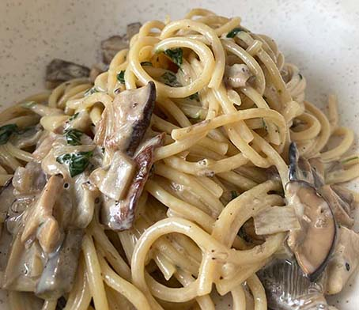
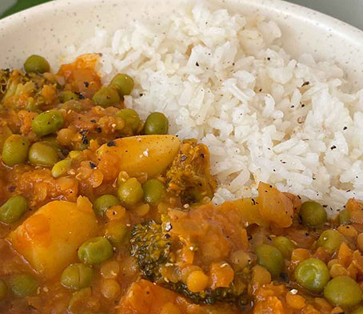
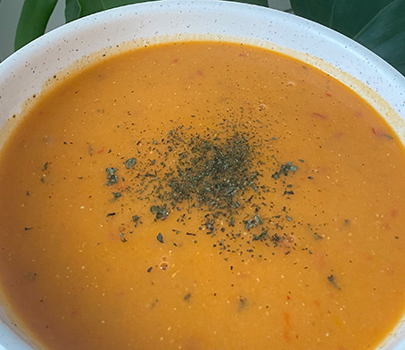

Five easy and tasty dinner ideas that won't tear a hole in your pocket.
by Beyza Arkis
Monday
You just came home from Uni but your stomach is already rumbling?
I know that feeling all too well.
It was a looong day so let's jump into our cozy lounge wear,
tune into our favorite podcast and prepare
our first dinner of the week:

Creamy Mushroom Pasta
20Min / (X Kr.≈X€)
Ingredients
100g of your favorite Pasta
2 garlic cloves
1 onion
150ml heavy cream
200g mushrooms
Steps
Cook your pasta according to the the instructions
Peel and mince your onion and your garlic
Slice your mushrooms
Heat a big skillet on medium heat
Sauté the onion. After about a minute you can add your garlic. This will prevent it from burning
When the onion becomes translucent and the garlic fragrant, add your mushrooms
Sauté them all together and make sure you do'nt overcrowd the skillet. (overcrowding=soggy mushrooms)
When your mushrooms turn golden add your cream
Turn down the heat to low and let the sauce simmer until thickened
Seasons your sauce sauce with salt and pepper
Toss your pasta into the sauce
Garnish with freshly grated pepper (or.. if you are felling extra fancy like me- with parsley
Veganize me: Use plant based soya cuisine instead of cream Tip: To save even more money you can pick
the mushrooms yourself! Mine are from the Skanderborg forest(~20km from Aarhus)
Tuesday
Tuesday. Ugh, almost feels like Monday 2.0 am i right? Today we are not as tired as yesterday.
But does that mean that we want to spend hours cooking? Absolutely not.
Let's make this a super quick
so we can enjoy the last sunny days and take some pictures of the beautiful golden fall. Grab your
ingredients for our next dinner:
Seitan Wrap
20Min / (X Kr.≈X€)
Ingredients
1 tortilla wrap
50g pipfri (seiten bites)
salad mix
1 tomato
2 tbsp Thousand Island Dressing
Steps
Fry your seitan bites in 2tbsp of oil
Spread the dressing on your tortilla wrap
Top generously with your salad mix, your tomato and your seitan bites
Roll up and enjoy!
Wednesday
It is Wednesday my dudes! More than half of the work week is done. We are excited and ready
for the next recipe that is loaded with our favorite veggies:
Sauté the onion, the spicy peppers and your carrot until they're golden
Add the tomato paste
Peel your tomatoes and cut them into cubes
Add them to your veggie mix and let it simmer until the tomatoes are soft
Add the bulgur and top it with 2 cups of water
Season generously with salt, pepper, paprika (and if you are extra fancy with dried mint)
Put a lid on your pot and let it simmer on low heat for 15 minutes
Tip: This recipe is perfect to substitute the veggies I used with whatever you have left in your fridge.
Thursday
"You are doing amazing sweetie!" as Kris Jenner would say. Just hang on we're almost there.
Let's
enjoy this evening with a protein boost in form of a warming:
Veggie Dhal With Jasmine Rice
20Min / (X Kr.≈X€)

Ingredients
1 cup of jasmine rice
1 cup of red lentils
1 onion
1 carrot
1 big potato
1/2 broccoli
1/2cup of frozen peas
1 tbsp tomato paste
200ml coconut milk
salt, pepper, 1tsp turmeric
Steps
Cook the rice according to the instructions
Wash and chop your vegetables in the same size so they're done at the same time
Sauté the onion, the carrot and potato until they're golden
Add the tomato paste
Wash the lentils and add them to your vegetables
Deglaze with 150ml of water
Bring it to a boil and reduce the heat to low
After 15 min check your vegetables and lentils. You can add the coconut milk if they are soften.
Season generouslywith salt, pepper, turmeric (and chili)
Tip: This is enough for two meals. If you don't think you can finish the Dhal you can easily freeze it.
Friday
Friday, Friday gotta get down on Friday! You made it! The weekend is there and we are ready to socialize.
I know It's not always easy, but come on give it a try at least!
Let's prepare an easy soup so you have more time to get ready :)

Lentil Soup
20Min / (X Kr.≈X€)
Ingredients
1 cup of red lentils
1 onion
1 carrot
1 big potato
1tbsp tomato paste
1tbsp butter
1/2 lemon
Steps
Chop your vegetables in quarters
Sauté them for 3-5 minutes on high heat
wash your lentils and add them to the vegetables
add 1,3L of water and reduce the heat to low
after 15 minutes you can check if your lentils and vegetables became soft
give it a quick blitz and season it
melt the butter in a separate pan
add the tomatopaste
pour the mixture to the soup and season it with mint
garnish it with mint and serve it with freshly squeezed lemon juice
Tip: Lemon juice in soup sounds weird, I get it. But trust me, it's e s s e n t i a l.